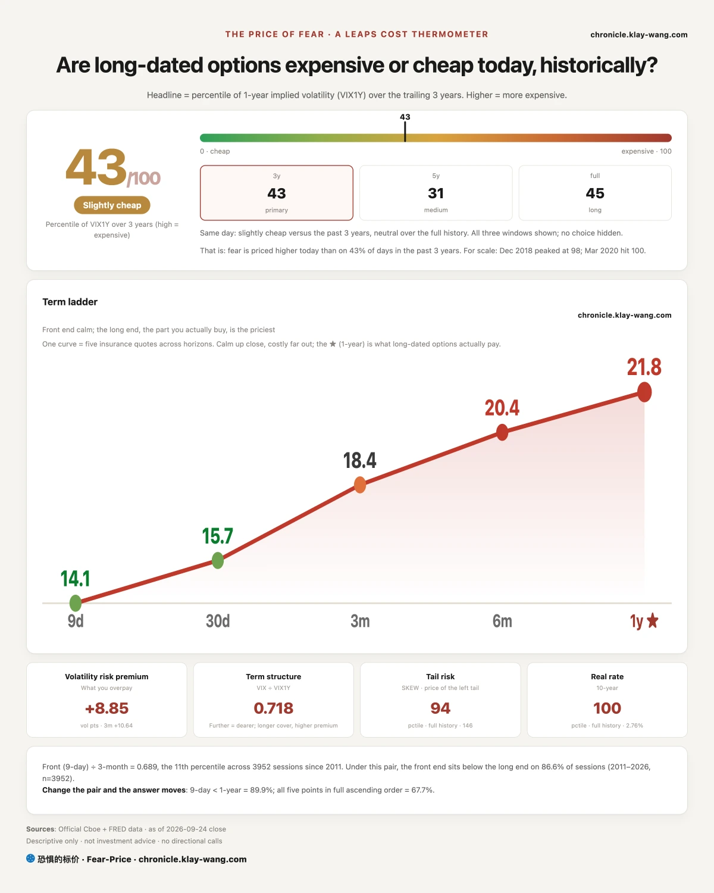
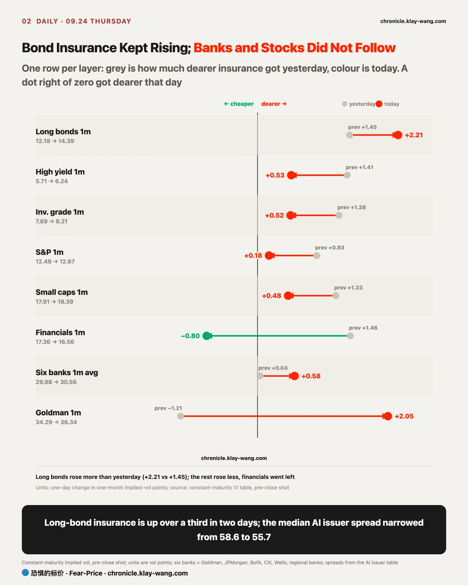
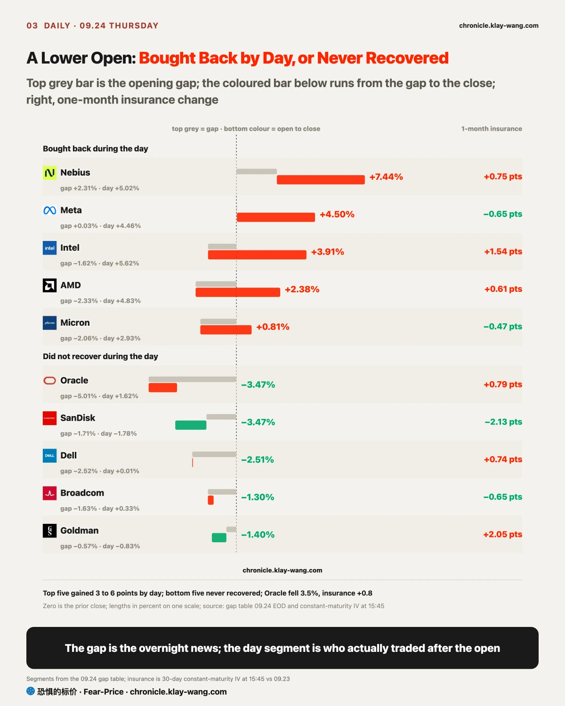
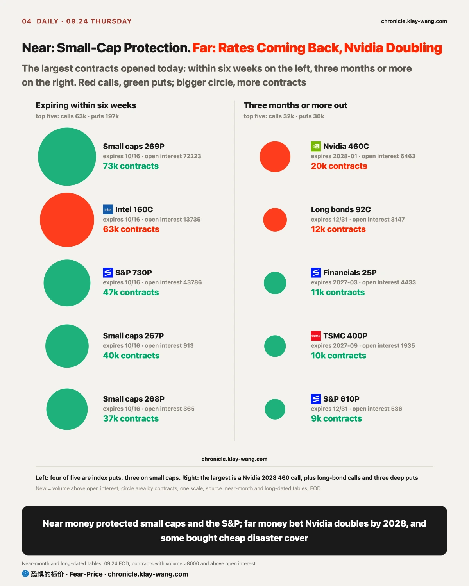

Fear-Price Index · Sep 24, 2026 · reading 43.3/100: one-year volatility VIX1Y at 21.82, in the 43.3rd percentile of the past three years, where high means expensive. Daily ledger and definitions at chronicle.klay-wang.com · Please credit: Fear-Price Index
It was 40.9 yesterday and 43.3 today; one-year insurance got only slightly dearer, 21.69 to 21.82. The near end moved more: nine-day volatility went from 13.45 to 14.11, and the one-month VIX from 15.18 to 15.67. On the day rates hit their highest since 2004, one-year stock insurance barely repriced; the market is not treating this as something that lasts a year.
VIX is 15.67 and CNN Fear and Greed is 36.1, so the K index that divides one by the other is 2.305, against a final 2.144 yesterday: slightly fewer people say they worry, while about as many pay for protection. For K to fall below 1 at the Fear and Greed reading of today, VIX would need to rise past 36. History at chronicle.klay-wang.com/kindex, the index itself at chronicle.klay-wang.com/fear-price.
One more reading hit its ceiling today: the 10-year real rate is 2.76%, in the 100th percentile of its full history, against 2.63% and the 98.9th yesterday. The price of borrowing after inflation is the highest on record.
The real repricing was in bonds. MOVE, the fear gauge of the bond market and the price of insurance against Treasury swings over the next month, went from 79 two days ago to 95 yesterday and 105 today, up over a third in two days, in step with long-bond fund insurance. Stock insurance for a year sits in the cheaper half of the past three years while bond insurance climbs fast, and the gap widened again today. For you: one-year protection on a stock portfolio costs about what it did yesterday; if you hold long bonds, protection is already clearly dearer.

No buyer stepped in today after the Wednesday selloff. Three things landed in a row.
In the morning, New York Fed President John Williams said market expectations of another hike before year-end were reasonable; he sees a resilient economy, a shrinking risk of the job market weakening, and AI demand still pushing prices up. Data released the same morning showed weekly initial jobless claims at 197k, below the 201k expected. Fewer people filing for benefits each week means the labour market is still tight, and the Fed has no reason to stop.
The second was oil. Iran said the conflict could spread to the Indian Ocean, US-Iran talks made no progress, Brent held above 100 dollars and the main crude oil fund closed up about 3%. Oil is the first part of prices to move; when it rises, the market believes more firmly that inflation will not come down and prices in more hikes.
The third was abroad. The Japanese 10-year yield rose above 3%, the highest since 1996. The Bank of Japan hiked last week without saying what comes next, and Japanese bonds sold off with the rest. That weighs directly on Treasuries: Japanese money can now earn more at home, which leaves one less reason to buy long US bonds. US, Japanese and Australian long bonds fell together today, so part of this move is a global repricing of the long end.
Supply added to it in the afternoon. A 44 billion dollar seven-year auction cleared at 5.085%, the highest on record for that maturity and 0.7 basis points above the pre-auction market level, with foreign buyers taking their smallest share since November 2025: buyers needed more yield to take the paper. The Treasury also bought back 20 to 30 year bonds the same day, accepting only about 4.1 billion of a 6 billion dollar cap, against about 86% two weeks ago. A buyback is the Treasury taking long bonds back to support the market, and this one supported less than expected; after the auction the 30-year briefly touched 5.49%.
The result: the 10-year closed at 5.16% and the 30-year at 5.46%, the highest since 2004. The long-bond fund fell 1.3%, all of it during the day; it opened only 0.1% lower, so the selling ran from the open onward.
For ordinary people: mortgage rates follow the 10-year Treasury, so another step up in long yields means monthly payments on new mortgages keep climbing. Deposits, money-market funds and short Treasuries pay more, with the three-month bill yield up to 4.07%. Borrowers lose and people with spare cash gain, and that tilt moved one step further today.

The shock is still sitting in rates: bond insurance kept rising and credit did not move. It has not yet reached credit, the thing to watch since Wednesday.
The price of insurance is set by people bidding for protection, so the insurance that gets dearer belongs to whatever more people worry about. One-month insurance on the long-bond fund went 10.73, 12.18, 14.39 over three days, over a third dearer in two. High-yield and investment-grade bond fund insurance kept rising too, 7% to 9% each. Those funds hold company bonds, but their insurance is rising mainly because bond prices swing with Treasury yields; the investment-grade fund fell 0.7% today, more than high yield, because its bonds are longer and more rate-sensitive, which also says the swing is in rates.
To see whether borrowers are in trouble, you have to look at spreads on individual issuers. A spread is the extra interest the bond of a company pays over a Treasury of the same maturity, the price the bond market puts on whether that company can pay. Across 14 AI-related issuers, the median spread narrowed from 58.6 to 55.7 basis points today. Only Oracle widened, by about 7 basis points from 160 to 167, which fits its data-centre news and is its own story.
Banks did not move either. One-month insurance on the six banks averaged 29.98 yesterday and 30.56 today, with only Goldman up two points on its own. One-month protection on stocks was quieter still, the S&P going 12.49 to 12.67, while MOVE, insurance on rates, rose over a third in two days, so the gap keeps widening.
So today looked like yesterday, only harder: bond insurance keeps getting dearer while company spreads and bank insurance do not follow. My read is that the shock is still in rates; if by September 30 the median spread on these 14 issuers reaches 73.6 basis points, 15 wider than yesterday, or six-bank one-month insurance averages above 32, that read fails, the rate story becomes a story about whether borrowers can pay, and indexes will not end flat. If you hold a corporate bond fund, its swings for now come from Treasury rates, not from the companies themselves.

Whether anyone wanted a stock today showed during the day, not at the open. Most names opened lower and closed higher. The opening price is set by overnight news and pre-market trading on thin volume; where the price goes after the open is who actually traded. So to see whether anyone wanted a stock today, separate the gap from the day.
Intel opened 1.6% lower and closed up 3.9%, gaining 5.6% during the day on 1.4 times the volume of yesterday. AMD opened 2.3% lower and gained 4.8% during the day; Micron opened 2.1% lower, gained 2.9% and closed green. These were cut with rates in the morning and bought back during the day, with buyers more eager than sellers.
Meta was different. It barely gapped, and all of its 4.5% came during the day, closing at 777.59, its highest close in three months. It is up 36% in September, its biggest monthly gain since July 2013, with a market value near 1.98 trillion dollars. At Connect it plugged its Muse agent into glasses, the Mac and email, and brought in Walmart for shopping with a cut of each transaction. It was down nearly 2% before the open and was bought all day. It now sits more than a fifth above its 50-day line at 613. On consensus estimates it trades at about 21 times forward earnings, slightly below the Nasdaq 100 at 22, so the valuation is not stretched, though analysts expect free cash flow to turn negative this year on AI spending. After a gain of that size, the Wednesday close near 744 is the first support, and the settlement tomorrow on the pre-event calls will show whether money keeps following the rally.
Oracle and SanDisk did not recover during the day, in two different ways. Oracle issued a force majeure notice on its New Mexico data centre and, if the project is delayed, wants to defer payments. It gapped down 5%, recovered only a little during the day, and traded 2.5 times the volume of yesterday: someone was in a hurry to sell. The close was its lowest since July 31, and Bloom Energy, which supplies fuel cells to the project, fell with it. It sits below its 50-day line and further below its 200-day.
Oddly, Oracle insurance barely got dearer, one month going from 48.5 to 49.3. Sellers sold, and those who stayed did not scramble for protection: they read it as a delay on one project, not a problem with the whole Oracle AI plan. Its credit spread widened about 7 basis points, and only that far.
SanDisk fell 3.5%, opening 1.7% lower and losing another 1.8% during the day on about the same volume as yesterday; its one-month insurance actually fell from 71.4 to 69.3. As yesterday, the price fell because buyers stepped back, not because sellers were in a hurry. The Micron results on September 30 are the next checkpoint for the group. If you hold any of these, where the day segment went says more about demand than the size of the opening gap.

Options again split the same story in two.
Near end: puts expiring within six weeks were concentrated in small caps. A put is insurance against a fall, and small-cap puts outnumbered calls four to one today. Small companies borrow more and feel rising rates first, so people worried about rates insure them first. Two new strikes opened today, October 16 expiry about 5% below the price, each trading 37k to 40k contracts against open interest of a few hundred.
The strike from yesterday has an update too. It traded 80k contracts yesterday, 72k were still held after the settlement this morning, 88.6% kept, so that call is confirmed. Today it traded 72711 contracts again, about the same as the open interest. Either the buyers from yesterday handed the whole block on, or it was closed and reopened; open interest tomorrow will say which.
Far: money expiring three months or more out is still betting rates come back. In that range, long-bond fund calls outnumbered puts more than four to one, with one January 2028 strike trading 18k in a day. The four far-dated long-bond call strikes from yesterday kept 93.5% this morning, so that call is confirmed too. With rates at a new high, the positions betting on a fall were not closed. If the Nvidia 460 call open interest tomorrow rises by less than half of the volume today, the trade was mostly in and out within the day, not a long-term position.
The other far bet was Nvidia. The January 2028 460 call traded 20k contracts in a day against open interest of 6463. 460 is more than double the price, a bet that it doubles in about sixteen months. It was placed while Nvidia insurance is at its cheapest: only about 1% of days in the past year had lower implied volatility, which is also below its actual volatility over the past 30 days. Cheap options make far calls cheap, so someone picked this moment for a long bet.
Financials ran the other way. Bank fund puts expiring in 2027, one strike about 27% below the price and one more than half below, traded 16k and 11k contracts. Puts that far out of the money are usually near worthless; buying them is cheap insurance for the day banks run into real trouble.
If you hold small caps or banks, these trades show people paying to protect exactly that exposure; if you hold Nvidia, someone far out is betting it doubles by early 2028, a view on more than a year out, not on the next few weeks.
Two calls from last Thursday settled at the close, both confirmed. On chips, the semiconductor fund has closed above 545.56 every day since, and one-year insurance on the chip names is dearer than it was then; the money that came back stayed. On banks, the financials fund never got back to 57, and the long-dated put half kept 99% last Friday. And the Alphabet October 30 puts from yesterday kept nearly all of their 10k contracts this morning.
If you hold bonds or bond funds: long-bond insurance is up over a third in two days, and bond funds are swinging on rates while company spreads have not widened. Every day yields stay above 5%, the far-dated bets on a comeback hold out another day; to change the view, watch issuer spreads and bank insurance. Once they move, the shock has reached companies.
If you hold index funds: indexes ended flat because Meta and a few chip names were bought back during the day, while rates and oil closed high underneath. One-month S&P insurance rose only slightly today, 12.49 to 12.67; adding protection now costs less than after credit cracks.
If you hold AI or chip stocks: today split them in two. Intel, AMD, Micron and Meta found buyers during the day; Oracle was sold on heavy volume and SanDisk drifted lower on thin volume. Oracle has a delay on one project, and its insurance barely rose; SanDisk waits on the Micron results on September 30.
If you hold small caps: this is where protection is most concentrated. Small companies borrow more, and another step up in rates hits them first.